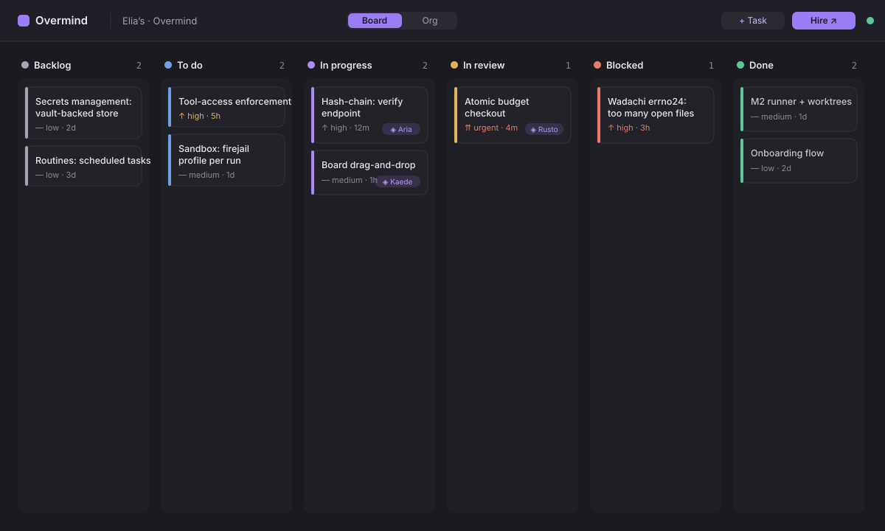
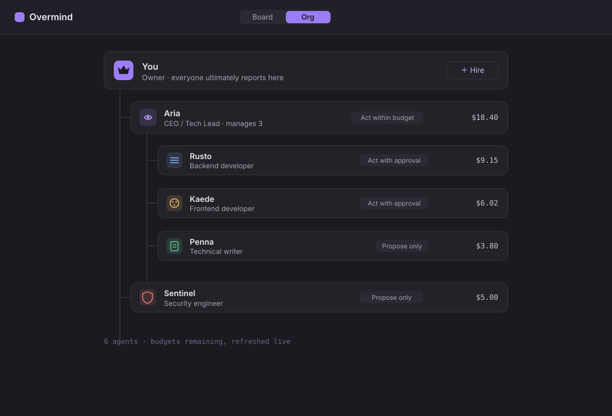
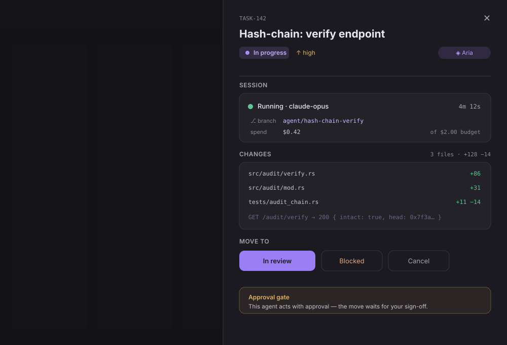
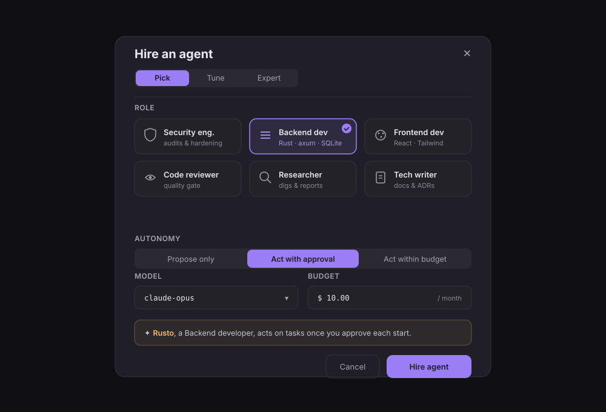

The app
A real UI, not a config file.
A React + Radix front end over the Rust control plane, built on one token source (OKLCH throughout, a hue per lifecycle state, Inter + JetBrains Mono for machine values). Click-first and progressively disclosed — pick, tune, expert. Here are the four surfaces you live in.
Board
The company's work, one hue per lifecycle state — learned once, then read everywhere. Backlog → To do → In progress → In review → Blocked → Done, with each card carrying its priority, age, and assigned agent.

Org chart
Agents are employees, rooted at you. Roles, reporting lines, autonomy, and the budget each has left — hire under any node, and the chart is the real structure work and money flow through.

Task detail
Open a task and a drawer slides in: its status and priority, the assigned agent, the live session with branch and spend against budget, the diff it produced, and only the status moves the state machine actually allows — held at an approval gate when autonomy demands it.

Hire dialog
Hiring is progressive disclosure made concrete. Pick an archetype; tune autonomy, review strictness, model, and budget; drop to expert for the raw config. Every structured choice maps to a server-enforced setting — and a plain-language preview tells you exactly what the agent may do before you commit.
